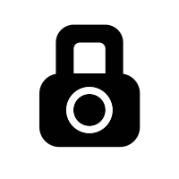
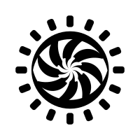

SCP Classes Explained
Containment Classes:
A common way to determine the class of an entity is to use an informal guideline called the Locked Box Test, which is a thought experiment consisting of imagining an anomalous object within a locked box and the result of leaving it alone.
Containment Class:
SAFE

The name of Safe was chosen as an easily understood term.
Anomalies classified as Safe are those deemed as being easy to contain and generally safe to handle.
While this does not mean Safe SCPs are not dangerous in some capacity, they pose no active threat to humanity or normalcy.
Using the Locked Box Test, if you lock an entity in a box and leave it alone, with nothing happening, it's likely Safe.
Containment Class:
EUCLID
The name of Euclid comes from the Greek mathematician Euclid.
Anomalies classified as Euclid typically need more resources to keep fully contained, though this is mainly to a lack of full understanding of the anomaly.
Most Euclid SCPs can move on their own, either possessing sapient or sentient capacities or simply being autonomous. Euclids can be dangerous, though not always.
Using the Locked Box Test, if you lock an entity in a box and leave it alone, and you're not sure what'll happen, it's likely Euclid.
Containment Class:
KETER
The name of Keter is derived from the topmost part of the Tree of Life in the Jewish Kabbalah.
Depending on headcanon, it could also be derived from Dr. Hermann Keter's name.
Anomalies classified as Keter require vast amounts of resources to contain or have common containment breaches;
these entities generally have lengthy containment protocols and tend to have higher Risk Classes.
With the Locked Box Test, if you lock an entity in a box and leave it alone, and it breaks out, it's likely Keter.
Disruption Classes:
Disruption Classes are categories of anomalous entities ranked by their possibility to threaten normalcy and the Veil Protocol,
possibly upsetting the current status quo of Earth.
The classes are ranked by their potential of disruption to the human population.
The Locked Box Test is difficult to use with Disruption Classes, with three simple questions replacing this test to determine the Disruption Class:
how fast will the anomaly spread, how far will it spread, and how easily can the SCP Foundation counter it.
Disruption Class:
DARK
The name of Dark was chosen as an easily understood term, similar to Safe for Containment Classes.
Anomalies classified as Dark have little to no potential to disrupt the general population.
Any influence by a Dark SCP is too slow to be of any concern to the SCP Foundation, with it either being inert or only affecting one individual.
They are also of no priority to clean up, as its effects would be miniscule and, frankly, trivial to cover up.
Disruption Class:
VLAM
The name of Vlam is derived from the Dutch word for "flame," also indicated by its icon.
Anomalies classified as Vlam have some potential for disruption, though it only affects small groups of people.
Influence from a Vlam SCP can affect multiple people, though this won't spread very far.
Elimination of Vlam influence is simple to do for the SCP Foundation in the aftermath of an incident.
Disruption Class:
KENEQ
The name of Keneq derives from the Alutiiq word for "camp fire", though this can extend to any form of fire.
Anomalies classified as Keneq have enough potential to disrupt a city or enough people to populate a city.
Keneq SCP influence can spread at a fast speed, making it enough to cause concern for the Foundation.
Countering its influence can be moderately difficult to do for the Foundation.
Disruption Class:
EKHI
The name of Ekhi is from the Basque word for "Sun".
Anomalies classified as Ekhi are very dangerous, with influence spanning countries or large cities, or even the entire world.
Any spread from an Ekhi SCP would be very difficult to manage due to its size or power, as well as being hard to neutralize any effects from such an anomaly.
Disruption Class:
AMIDA

The name of Amida has many meanings, but it is a direct reference to the Buddha of Eternal Light.
Anomalies classified as Amida have such a large influence that they threaten to break or have already broken the Veil, n
ecessitating the SCP Foundation to "declare war" on them.
Eliminating these anomalies are the highest priority, as humanity itself is at risk when an Amida SCP is active.
These anomalies have influences that spread across the entire known world and up to the universe.
Risk Classes:
Risk Classes are categories of anomalous entities ranked by their severity of an anomaly's effects on one individual person and the difficulty it is to recover from such effects.
The Locked Box Test is difficult to use with Disruption Classes, with three simple questions replacing this test to determine the Risk Class:
how fast do people recover from the effects, how severe are the effects, and when are the effects noticed.
Risk Class:
NOTICE
Anomalies classified as Notice have low risk potential.
Notice SCPs rarely have any effects on humans, with any being mild at its maximum.
When in proximity of a Notice SCP, one wouldn't feel any effects, due to their non-existence or how mild they truly are.
Risk Class:
CAUTION
Anomalies classified as Caution have moderate risk potential.
Some effects on humans are present, though these are typically mild to moderate, possibly being mildly dangerous.
Anyone being affected by a Caution SCP may feel some of the effects from it.
Risk Class:
WARNING
Anomalies classified as Warning have high risk potential.
These typically possess mild to severe effects on humans, posing moderate danger to those nearby a Warning SCP.
Risk Class:
DANGER
Anomalies classified as Danger have very high risk potential, with a high possibility of being affected by a Danger SCP.
These effects are also typically deadly, ranging from major to extreme.
brAnybody in the presence of a Danger SCP is at a high risk.
Risk Class:
CRITICAL
Anomalies classified as Critical have incalculable risk potential, as the effects of a Critical SCP will be instant and/or severe.
Death is highly likely and expected from Critical SCPs, though it is not guaranteed if caught in the presence of one.
The possibility of recovery from the effects of a Critical SCP is deemed impossible.